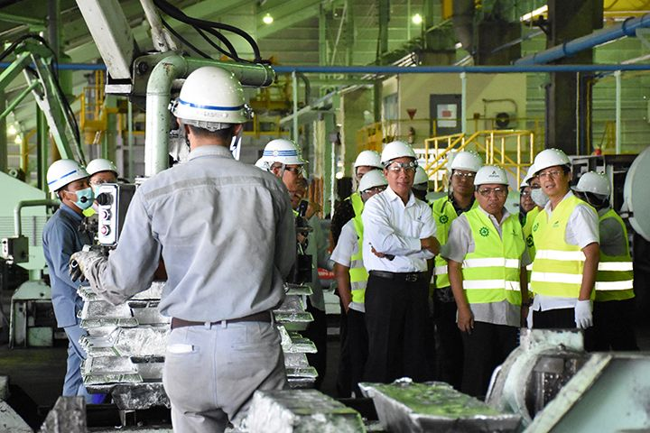
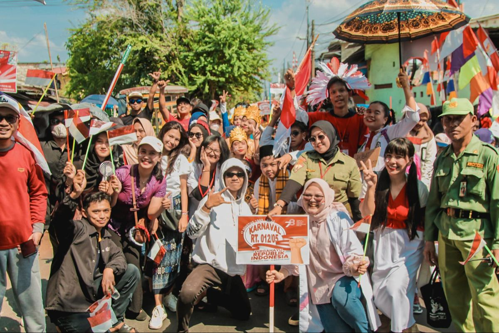
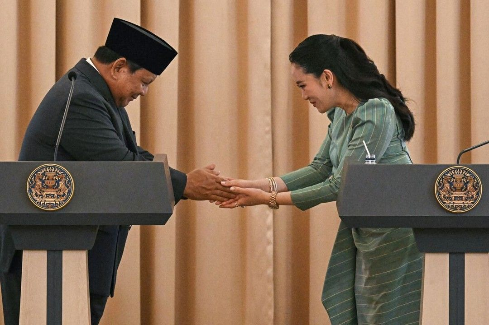

Kemiskinan membuat orang sulit memenuhi kebutuhan dasar dan keluar dari kesulitan hidup. Dengan perlindungan sosial dan peluang ekonomi, masyarakat bisa hidup lebih layak.
Tujuan: mengakhiri kemiskinan dalam segala bentuk di mana pun.


SDGs (Sustainable Development Goals) atau Tujuan Pembangunan Berkelanjutan adalah agenda global PBB yang diadopsi pada 2015 untuk mengakhiri kemiskinan, melindungi lingkungan, mengurangi ketimpangan, serta mewujudkan perdamaian dan kesejahteraan bagi semua orang pada 2030. SDGs terdiri dari 17 tujuan dan 169 target, serta menyeimbangkan aspek ekonomi, sosial, dan lingkungan.

Kemiskinan membuat orang sulit memenuhi kebutuhan dasar dan keluar dari kesulitan hidup. Dengan perlindungan sosial dan peluang ekonomi, masyarakat bisa hidup lebih layak.
Tujuan: mengakhiri kemiskinan dalam segala bentuk di mana pun.


Kekurangan pangan dan gizi buruk menghambat tumbuh kembang serta produktivitas. Dengan pertanian yang baik, pangan tersedia dan gizi masyarakat meningkat.
Tujuan: mengakhiri kelaparan, mencapai ketahanan pangan dan perbaikan gizi, serta mendorong pertanian berkelanjutan.


Masyarakat yang sakit sulit belajar dan bekerja dengan baik. Layanan kesehatan yang merata membuat hidup lebih sehat dan produktif.
Tujuan: menjamin kehidupan yang sehat dan mendorong kesejahteraan bagi semua usia.


Tanpa pendidikan yang baik, peluang kerja dan kemajuan menjadi terbatas. Pendidikan yang merata membuka kesempatan bagi semua orang.
Tujuan: menjamin pendidikan yang inklusif, setara, dan berkualitas, serta kesempatan belajar sepanjang hayat.


Diskriminasi gender membatasi peran perempuan dalam pendidikan, pekerjaan, dan pengambilan keputusan. Dengan kesetaraan, semua orang bisa berkontribusi secara adil.
Tujuan: mencapai kesetaraan gender dan memberdayakan seluruh perempuan dan anak perempuan.


Air yang tercemar dan sanitasi buruk memicu penyakit. Akses air bersih menjaga kesehatan dan kualitas hidup masyarakat.
Tujuan: menjamin ketersediaan serta pengelolaan air bersih dan sanitasi yang berkelanjutan untuk semua.


Tanpa listrik dan energi yang memadai, kegiatan belajar, usaha, dan layanan kesehatan terhambat. Energi bersih menjaga kebutuhan tetap terpenuhi tanpa merusak lingkungan.
Tujuan: menjamin akses energi yang terjangkau, andal, berkelanjutan, dan modern bagi semua.


Pertumbuhan ekonomi tidak berarti jika lapangan kerja sedikit dan kondisi kerja buruk. Pekerjaan layak membuat ekonomi tumbuh sekaligus menyejahterakan pekerja.
Tujuan: mendorong pertumbuhan ekonomi yang inklusif dan berkelanjutan, serta pekerjaan yang produktif dan layak bagi semua.


Industri yang tidak modern dan infrastruktur yang buruk membuat negara sulit maju. Dengan inovasi dan infrastruktur yang kuat, pembangunan berjalan lebih cepat dan efisien.
Tujuan: membangun infrastruktur yang tangguh, mendorong industrialisasi yang inklusif dan berkelanjutan, serta mendukung inovasi.


Ketimpangan yang besar membuat sebagian orang tertinggal dari kemajuan. Dengan kesempatan yang lebih merata, hasil pembangunan bisa dirasakan semua kalangan.
Tujuan: mengurangi ketimpangan di dalam negara maupun antarnegara.


Kota yang padat, kumuh, dan rawan bencana mengancam keselamatan warganya. Perencanaan yang baik membuat kota lebih aman, nyaman, dan tertata.
Tujuan: menjadikan kota dan permukiman inklusif, aman, tangguh, dan berkelanjutan.


Pemakaian sumber daya yang berlebihan menimbulkan limbah dan merusak alam. Dengan pola yang lebih bijak, sumber daya tetap cukup untuk generasi mendatang.
Tujuan: menjamin pola konsumsi dan produksi yang berkelanjutan.


Perubahan iklim memicu cuaca ekstrem, banjir, dan kekeringan yang merugikan banyak orang. Tindakan cepat dapat mengurangi dampaknya dan melindungi bumi.
Tujuan: mengambil tindakan segera untuk memerangi perubahan iklim dan dampaknya.


Pencemaran dan penangkapan ikan berlebihan merusak kehidupan laut. Laut yang terjaga menjadi sumber pangan dan penghidupan jangka panjang.
Tujuan: melestarikan dan memanfaatkan laut, samudra, dan sumber daya kelautan secara berkelanjutan.


Penebangan hutan dan kerusakan lahan mengancam satwa dan keseimbangan alam. Dengan perlindungan yang baik, hutan dan keanekaragaman hayati tetap terjaga.
Tujuan: melindungi, memulihkan, dan memanfaatkan ekosistem darat secara berkelanjutan, mengelola hutan lestari, mengatasi penggurunan, menghentikan degradasi lahan, dan menghentikan hilangnya keanekaragaman hayati.


Konflik, korupsi, dan hukum yang lemah membuat masyarakat tidak aman dan sulit percaya pada pemerintah. Lembaga yang adil dan transparan menciptakan rasa aman serta kepercayaan.
Tujuan: mendorong masyarakat yang damai dan inklusif, akses keadilan bagi semua, serta lembaga yang efektif, akuntabel, dan inklusif.


Masalah global tidak bisa diselesaikan sendirian oleh satu pihak. Dengan kerja sama pemerintah, swasta, dan masyarakat, semua tujuan lebih mudah tercapai.
Tujuan: memperkuat sarana pelaksanaan dan menghidupkan kembali kemitraan global untuk pembangunan berkelanjutan.